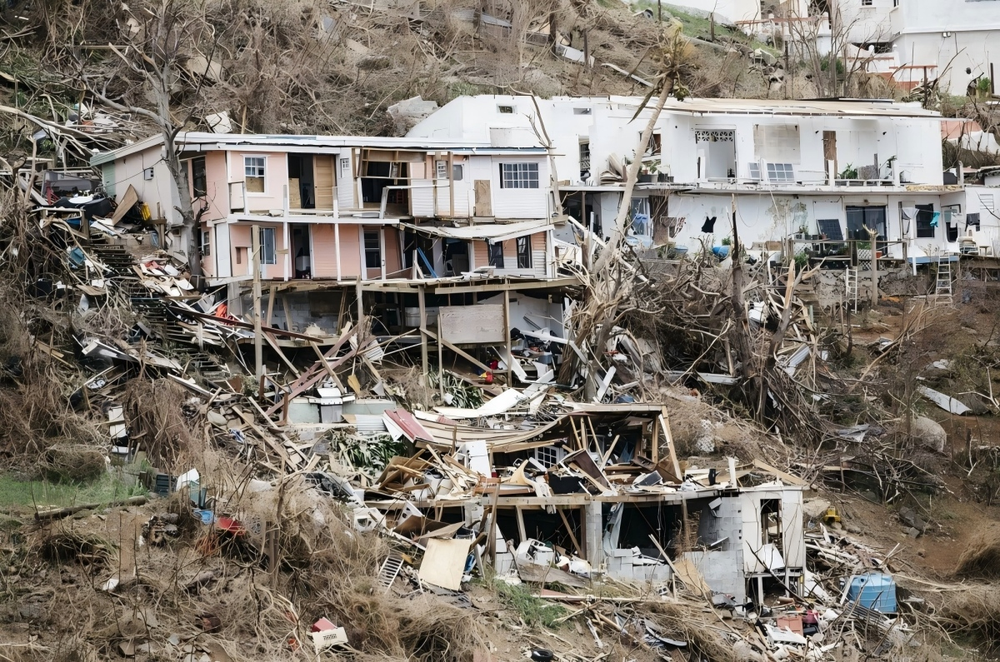
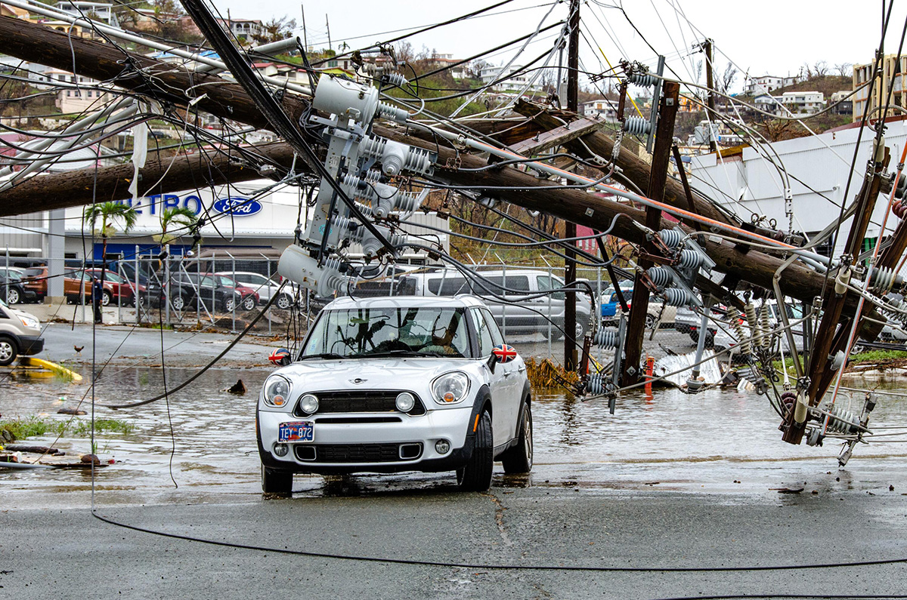

St. Thomas, one of the major islands of the U.S. Virgin Islands, lies in the eastern Caribbean, where steep volcanic terrain meets a shallow, highly dynamic coastal shelf. Steep topography and coastal concentration of development make small island cities highly sensitive to flooding, and St. Thomas is no exception.
Code
import foliumimport geopandas as gpd# Load boundary in WGS84boundary = gpd.read_file("data/processed/st_thomas_boundary.geojson").to_crs("EPSG:4326")# Project to a planar CRS (UTM zone 20N) to compute centroid accuratelyboundary_proj = boundary.to_crs(epsg=32620)ctr_proj = boundary_proj.geometry.centroid# Transform centroid back to WGS84 for map centerctr_wgs = gpd.GeoSeries(ctr_proj, crs=32620).to_crs(epsg=4326)center_lat = ctr_wgs.y.mean()center_lon = ctr_wgs.x.mean()# Build the Folium mapf = folium.Figure(height=500)m = folium.Map(location=[center_lat, center_lon], zoom_start=12, control_scale=True).add_to(f)# Esri Satellite basemapfolium.TileLayer( tiles='https://server.arcgisonline.com/ArcGIS/rest/services/World_Imagery/MapServer/tile/{z}/{y}/{x}', attr='Esri', name='Esri Satellite', overlay=False, control=True).add_to(m)# Boundary overlayfolium.GeoJson( boundary.to_json(), name="Boundary", style_function=lambda x: {"color": "#DD6F78", "weight": 2, "fill": False},).add_to(m)# Layer controlfolium.LayerControl().add_to(m)# Display in notebookm
Figure 1: St Thomas, USVI
Flooding has long been a persistent and destructive force across St. Thomas’s residential neighborhoods. Seasonal storms and intense rainfall frequently overwhelm the island’s limited drainage capacity, resulting in rapid water accumulation across hillside settlements and low-lying coastal communities. The scale of past impacts underscores the severity of this hazard: there is a 92% chance of flooding during 4 inches or more of rainfall, 85% of households reported damage during the 2017 hurricanes, and estimated economic losses exceeded $11.25 billion. These recurring disruptions highlight the intertwined roles of environmental exposure, infrastructure limitations, and socioeconomic fragility.

Figure 2: Homes Damaged by Hurricane Irma in St Thomas

Figure 3: Flood Hazard in St Thomas
In this project, community-level flood risk in St. Thomas is assessed using a Python and machine-learning framework that integrates flood susceptibility with community explosure. By mapping the spatial pattern of flood risk, identifying key environmental drivers, and comparing exposure disparities, such as shelter accessibility and variations in land value, the analysis provides essential insights for understanding flood exposure, locating safe shelters, and planning appropriate insurance coverage.
Data Sources
This project uses the following datasets, all clipped to the administrative boundary of St. Thomas, USVI. Foundational spatial datasets, including historical flood zones, tsunami hazard zones, land cover, ghut (drainage channel) networks, designated emergency shelters, and administrative boundaries, were obtained from the USVI Open Data Portal (https://usvi-open-data-portal-upenn.hub.arcgis.com/ ). These layers provide essential contextual information on flooding hazards, drainage infrastructure, and critical facilities. Building footprint and parcel data, provided by the local government, contain housing and land value information used to identify residential buildings and analyze form and density in Python.Road networks data were derived using Pandana’s OpenStreetMap interface in Python.
The Digital Elevation Model (DEM) used in this study was sourced from the USGS 3D Elevation Program (https://usgs.entwine.io/ ) and provides approximately 10-meter spatial resolution, suitable for representing the steep terrain of St. Thomas. From this DEM, two terrain indicators were derived. First, slope was calculated using Python (numpy and rasterio) by computing pixel-level elevation gradients, resulting in a continuous slope raster capturing areas prone to rapid runoff. Second, distance to ghuts was generated by rasterizing drainage channels and applying Euclidean distance transforms, producing a 0–1000 m proximity raster that represents hydrologic pathways. These DEM-based derivatives form key environmental predictors for modeling flood susceptibility across the island.
Below is the workflow diagram for this project, accompanied by a concise summary of the major steps:
First, a flood inventory is generated by sampling flooded and non-flooded points across St. Thomas and attaching key environmental predictors such as elevation, slope, distance to ghuts, tsunami exposure, and land cover. These data form the basis for training the flood-susceptibility model.
Next, the dataset is split into training and testing sets, and a Random Forest classifier is applied to estimate flood susceptibility across the island. The model outputs a continuous surface of predicted flood likelihood, supporting community-level risk awareness and hazard communication.
The workflow then evaluates safety protection by assessing shelter accessibility. Using road-network data and shelter locations, walkable paths are modeled to calculate the nearest distance to designated shelters, highlighting disparities in evacuation potential.
Finally, parcel-value information is integrated with flood susceptibility and shelter access to assess risk management needs. This combined analysis identifies communities facing compound vulnerabilities and informs the development of community flood-risk maps and exposure-disparity assessments.
Note: This section summarizes the workflow; technical procedures and Python implementation details are provided in the Methods and Analysis section.